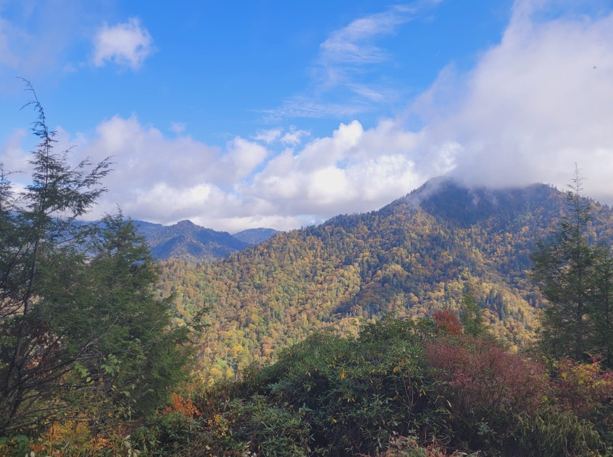

Professional Involvement
“Like what you do; then you will do your best.” — Katherine Johnson.
From a young age, I rarely found people who look like me, in mathematical settings. So, I became the face I couldn’t find and I’m helping to make sure the next generation sees many.
| Organization | Activity year | Involvement | Location |
|---|---|---|---|
|
Enhancing Diversity in Graduate Education (EDGE)
A nonprofit organization whose goal is to increase gender and racial diversity and equity in the mathematics community.
|
2016 | Joined the network, EDGE class of 2016 | Purdue University |
| 2019 | Organized an EDGE special session at the AWM Research Symposium | Rice University | |
| 2024 | Attended 25 years of EDGE celebration conference | Bryn Mawr College | |
| 2024 | Invited EDGE summer application reviewer | Online | |
| 2024 | Presented to the EDGE class of 2024 | University of Tennessee, Knoxville | |
| 2025 | Co-Editor of the special issue journal celebrating 25 years of EDGE | Online journal | |
|
Association for Women in Mathematics (AWM)
A non-profit professional society advancing women in the mathematical sciences through research, community, and advocacy.
|
2017 | Joined the AWM student chapter | University of Houston |
| 2019 | Appointed president of the AWM student chapter | University of Houston | |
| 2020 | Organized a Women in Quantum Computing special session at the AWM Research Symposium | University of Minnesota | |
| 2020 | Invited reviewer for AWM Springer book | Online | |
| 2023 | Organized a Women in Quantum Computing special session (second iteration) and panelist on math research in government labs | Clark Atlanta University | |
| 2024 | Appointed AWM travel grant selections committee member | Online (through 2027) | |
| 2025 | Organized a Women in Quantum Computing special session (third iteration) and panelist for mathematical careers | University of Wisconsin–Madison | |
| 2025 | Invited speaker: role of mathematical sciences at national labs | Online |
Contact Me
- Email: sarah-chehade at utc dot edu
- Website last updated: October 2025
- Social Media: LinkedIn
- Publications: Google Scholar